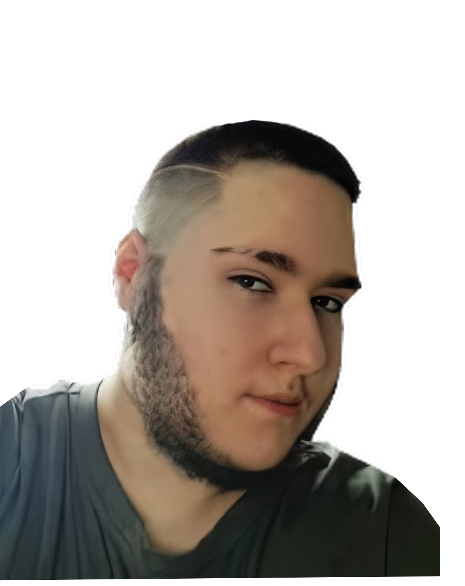

Leonardo
Soy Leonardo, diseñador digital y apasionado por la postproducción de vídeo, foto y audio. Empecé a experimentar de forma autodidacta durante la adolescencia, creando pequeñas piezas audiovisuales mediante edición y efectos digitales.
Me interesa especialmente el ritmo, el montaje y el tratamiento de la imagen, buscando siempre un equilibrio entre creatividad y claridad visual.